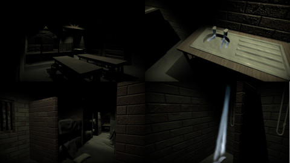

Cabin Fever
A Short Horror Experience focused on Sound
'Cabin Fever' was one of my 3rd year projects at the Glasgow School of Art and it was a project in collaboration with the Sound for the Moving Image, another course at the
university. The primary focus being on implementing sound and utilising it in our game/project. I titled this project Cabin Fever due to it being made in lockdown,
I used this as inspiration for the aim of the experience and made it the player's aim to escape from the building they were in by interacting with the environment to
find a way out.
For the interactive elements, the inspiration for the interactions and UI elements came from classic survival horror games like Resident Evil (Capcom) and also Silent Hill (Konami).
Genre: Horror Survival, First-Person
Engine: Unity
Development Period: 6 Weeks
Platform: PC
Art Direction
I was inspired by Survival Horror, creepy ominous atmospheres, having a feeling of unease. Taking inspiration for the location from Resident Evil - Code: Veronica (Capcom).
This was more of a technical project for me, due to some previous projects needing extra time on the coding side, I wanted to make sure that I was able to complete all of the code,
post processing and interactions as well as implementing the sound and menus correctly.

Documentation
Simulation
I took this opportunity to look at Cloth Simulation in order to create bedsheets and pillows. In order to get as much experience with the bedsheets as possible
and also to make the environment look more natural, I simulated and animated all of the bedsheets individually, for each bed instead of simply making one and copy-pasting it
around the dorm room.
The process of this took some trial and error to get it right and to a standard that I was happy with. I spent some time playing around with the material presets in the
Cloth Modifier in 3ds Max to see how they affected the bedsheet as it landed on the bed. I found that for the most best result, the Cotton Preset was actually very nicely set up so I used them with
minor tweaks to the Bends and the Density of the sheets.
Cloth settings
These are the settings I used for the sheets;
For the pillow I used very similar settings for as the sheet, except I used the Pressure value and played with the values to get a good amount of volume to the pillow.
I also had to disable the gravity when simulating this.
Most of this process was a lot of trial and error as I learned how the ins and outs of the Cloth Modifier worked exactly to get the best results.
Animating
When it came to animating the sheet, I created a Dummy that I would then Soft Selection to select what vertices of the bedsheet I wanted to connect to a Node which
would be connected to the Dummy, as the Dummy would allow me to animate and move the bedsheet during the simulation. For the animiation itself, I simulated the bedsheet falling onto the
bed then once it was finished I scrubbed through the timeline until I found a point that the bedsheet had come to a stop.
From here I then Truncated the frames after this point and began to move the Dummy slowly and while using auto-key. I moved the corner of the sheet until it was in a position
that when I detached it from the Dummy, it would fall back down on itself and the end result would look like someone had gotten out of bed and pulled the sheet over. For this part I had to
ensure that I had set up all of
the self-collision properly so that the bedsheet wasn't clipping through itself.
Early testing of the bedsheets.

This was the final outcome of a couple of the beds.
A simple animation for the door was added to help divide the starting room and the dorm area.
Different clips of the audio in game with their respective models.
Audio
I collected sound for the game from around my house. Trying to find as many unique sounds as I could and then planning what models that they could be used on, using things such as different
doors for creaking, taps cookers, ovens and more, even trying to get a suitable walking sound for the project. After modelling and designing the environment I then began to make as
many of the objects interactable as I could within the time frame.
I uploaded all of the collected sounds from my phone to Google Drive and then began to edit them in Adobe Audition to remove background noise and to also clip the audio to a better length. Really just any small tweaks that each
sound clip might have needed.
Interaction
Upon interacting with objects in the environment, a UI will pop up displaying some information and play the relating audio that I had recorded from around my house.
UI from Silent Hill (Konami)
Cabin Fever UI
Unity Implementation

In game screnshots of the project.
Sound
After editing all the sound clips to the desired lengths, I then began implementing them into Unity along with the animations for things like the door swinging open.
I then made any final adjustments to the animation and the sound clip so that the timing of the door swinging with the audio would sync up nicely and seem
realistic and fluid.
I did this for all audio clips as well as for the particle effects of the shower and the tap, making sure they were all synced up.
Particle System & Post Processing
Another area that I wished to develop my skills in was with Unity's Particle System since I had only used it once or twice in the past.
To make the Cabin feel old and abandonned I created a dust particle effect falling from the rafters overhead.
Different clips of the audio in game with their respective models.
On top of this I took the time to learn how to create a water particle effect that would come out of the taps and shower and collide with the surrounding models to make it look more realistic.
It was something I had never done before and I feel it was a simple but effective way to get some more experience using Unity's Particle System.
Self-Reflection
Areas that I believe that I did well on during the process of this project;
However as it was my first time using the modifier and learning how to create and animate sheets, I went slightly overboard with the poly count and this is something that I will rectify going forward and use sufficient smoothing groups to achieve the same outcome with a lot less polys.
Having the dimly lit Cabin with broken appliances, the creaking of the door, a soft light coming in a couple of the windows from the Moon, really helped emphasise the abandonned feeling that I was aiming to establish in this project.
These are some areas that I believe I could improve upon.
However I know that if I had been more creative with the environment I would not have been able to have the Unity side of the project as polished as it was within the time allocated for this project.
However, thankfully this is something I quickly learned from and solved after the project was complete and it is an error that I have not made since.
On top of making the environment seem more full, I wish I had created more unique dialogues to appear, for example, like how if the player interacts with the cooker it says "Hmm... sounds like the pilot is broken."
© All rights reserved

{kind=link}
{kind=link}
{kind=link}
{kind=link}
{kind=link}
{kind=link}
{kind=link}